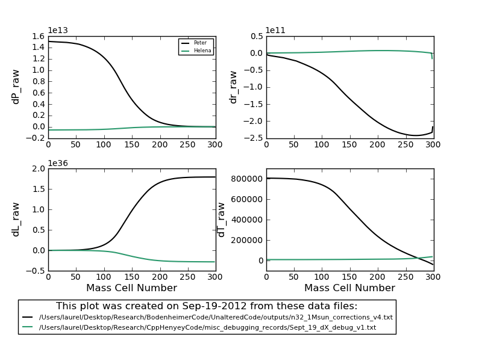

Date & Time: Sept. 21, 2012
Location: campus
Computing context: MachoMac
(/Desktop/Research/CppHenyeyCode/src, /Desktop/Research/BodenheimerCode/UnalteredCode)
From last time:
Test out how much of an effect fixing the G3J calculation/sign error in Helena has on fixing the overall dX problems
Done. Figure 1 illustrates just how little the dX profiles agree.

Figure
1
If the two dX profiles do not agree:
Use the python "dX walkthrough" scripts to gain further insight into the what's causing the profiles to (STILL!!!) disagree.
It would be good to modify Helena such that it prints out all the CDEGABS(inv)Sum info/values from each run into a distinct set of files.
Need to think about how to deal with the naming scheme for those files
What would be the easiest way to set up a user interface for the naming stuff?
Look up/remind myself how to do the 'writing to a text file' thing in C++
And then check/debug the process
To Do Today:
Integrate the
compare CDEGetc. python plotting scripts into the helena_wrapper.py
function
Make the
compare CDEGdXetc. python scripts capable of accepting inputs from
the command line
Figure out the
best way to manage all of the plots that will result from running
all of those analysis at once
Enh, I think this turns out to be more effort than it's worth.
Use the completed helena_wrapper python script to debug Helena's dX calculation process (which, as Figure 1 shows, is still not fully corrected.)
Need to redo the A and B matrix value calculations from the Peter-created CDEG inputs (w/ Helena)
I updated Helena to calculate G3J stuff correctly... no wait, if I feed Helena the PeterG values, it should be calculating the correct A and B matrix values.
Arg! So why are the dX profile calculations still not matching up??
Were the Peter values I've been using in my debugging generated from the NO fusion version of the fortran code??? Definitely need to check this.
Back up fortran and cpp codes to BitBucket
To keep in mind for later:
For the 1 Mjup model: do the Peter and Helena models' dX values (raw) now agree, too?